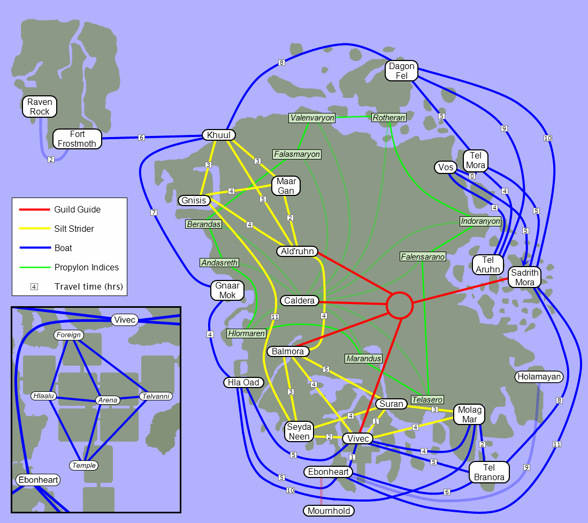
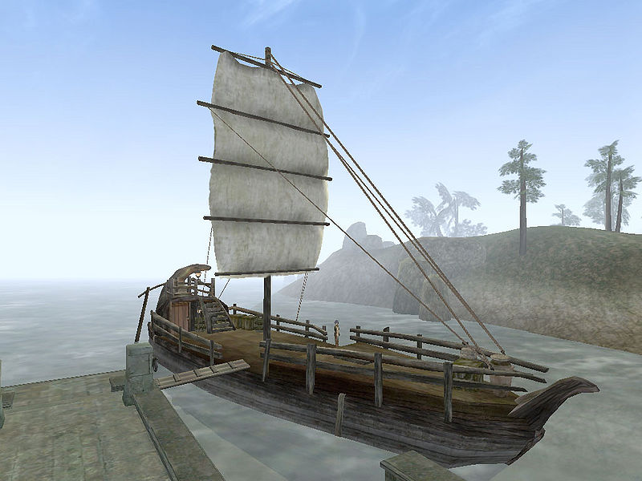
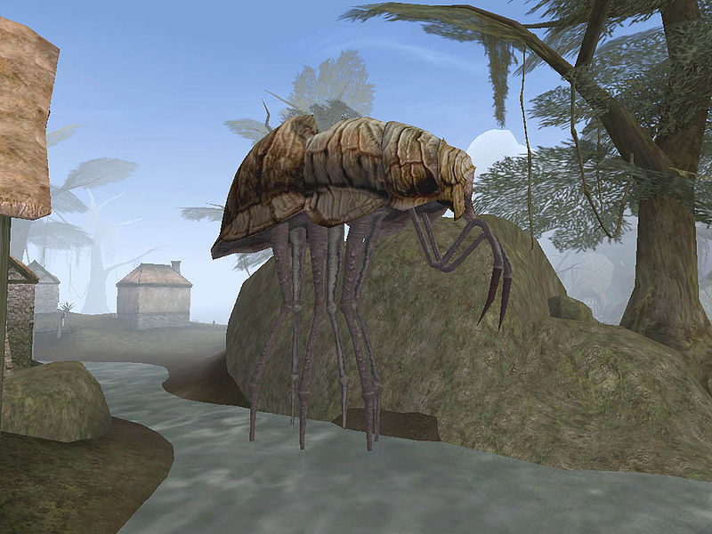
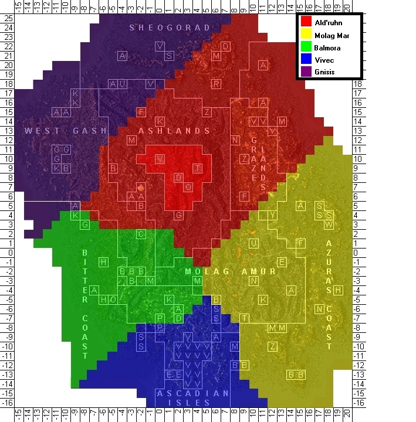
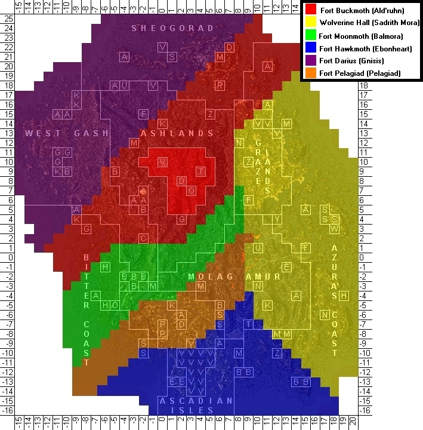

|  Route map showing quick-transport options throughout Vvardenfell. |
Vvardenfell is a vast landscape. There is even a quest whose sole objective is to walk from one side of the map to the other without talking to anyone, and this is likely to be an undertaking of half an hour or more, depending on how fast you can move. Luckily, most of the time you have no such issue with conversation, and are thus free to engage one of Vvardenfell's manifold quick-transport options. Note that non-magical transport takes time: although you may not realize it, a few game-hours will pass between, for example, boarding the Silt Strider in Gnisis, and getting off in Ald'ruhn. This time in transit counts as resting to restore health, magicka, and fatigue.
Followers will accompany you on commercial forms of transportation (silt striders, boats, gondolas, and guild guides). They will not accompany you if you cast Recall, Divine, or Almisivi Intervention or use a propylon chamber.
|  The Chun-Ook, anchored at Ebonheart |
Boat transport is available to most of the coastal cities on Vvardenfell. There are various types of seagoing transports, the most common being a large single-masted three-deck ship, or the smaller open boats found in the poorer settlements.
Boat services are available from the following cities:
| Origin | Destinations and Travel Times (In Hours) | |||||||
|---|---|---|---|---|---|---|---|---|
| Dagon Fel | Khuul | 8 | Sadrith Mora | 10 | Tel Aruhn | 9 | Tel Mora | 5 |
| Ebonheart | Hla Oad | 5 | Sadrith Mora | 11 | Tel Branora | 6 | Vivec | 1 |
| Gnaar Mok | Hla Oad | 4 | Khuul | 7 | ||||
| Hla Oad | Ebonheart | 5 | Gnaar Mok | 4 | Molag Mar | 10 | Vivec | 5 |
| Khuul | Dagon Fel | 8 | Gnaar Mok | |||||
| Molag Mar | Hla Oad | 10 | Tel Branora | 2 | Vivec | 4 | ||
| Sadrith Mora | Ebonheart | 11 | Dagon Fel | 10 | Tel Branora | 8 | Tel Mora | 5 |
| Tel Aruhn | Dagon Fel | 9 | Tel Mora | 4 | Vos | 4 | ||
| Tel Branora | Ebonheart | 6 | Molag Mar | 2 | Sadrith Mora | 8 | Vivec | 5 |
| Tel Mora | Dagon Fel | 5 | Sadrith Mora | 5 | Tel Aruhn | 4 | Vos | 0 |
| Vivec | Ebonheart | 1 | Hla Oad | 5 | Molag Mar | 4 | Tel Branora | 5 |
| Vos | Sadrith Mora | 5 | Tel Aruhn | 4 | Tel Mora | 0 | ||
|  The Silt Strider at Seyda Neen |
Silt Striders are used primarily as a means of civilian transport in an elaborate network stretching between various cities on the island of Vvardenfell in Morrowind. Having no natural cavities in which passengers may safely repose, a compartment is hollowed from the creature's chitinous shell, wherein both passengers and their luggage are loaded. The Silt Strider itself is then moved by direct manipulation of exposed organs and tissues by its driver, commonly known as a caravaner.
Apart from the transportation of passengers, Silt Striders are also employed in the shipment of trade goods. To that end, certain cities—most notably Gnisis and Molag Mar—have constructed Silt Strider docks to aid in the loading and unloading of cargo.
Desiccated remains of Silt Striders can be found in various parts of the Ashlands.
Most commonly employed in the southern and western parts of Vvardenfell, Silt Striders travel inland in the Ascadian Isles, West Gash, and Ashlands regions. Dependent upon the desired destination, passage to the following cities may be obtained for a set price from the point of origin. Each Silt Strider has a driver, or caravaner, that navigates the Silt Strider to its destination. All caravaners in Morrowind are Dark Elves.
| Origin | Destinations and Travel Times (In Hours) | |||||||
|---|---|---|---|---|---|---|---|---|
| Ald'ruhn | Balmora | 4 | Gnisis | 4 | Khuul | 5 | Maar Gan | 2 |
| Balmora | Ald'ruhn | 4 | Seyda Neen | 3 | Suran | 5 | Vivec | 4 |
| Gnisis | Ald'ruhn | 4 | Khuul | 3 | Maar Gan | 4 | Seyda Neen | 11 |
| Khuul | Ald'ruhn | 5 | Gnisis | 3 | Maar Gan | 3 | ||
| Maar Gan | Ald'ruhn | 2 | Gnisis | 4 | Khuul | 3 | ||
| Molag Mar | Suran | 3 | Vivec | 4 | ||||
| Seyda Neen | Balmora | 3 | Gnisis | 11 | Suran | 4 | Vivec | 2 |
| Suran | Balmora | 4 | Molag Mar | 3 | Seyda Neen | 4 | Vivec | 1 |
| Vivec | Balmora | 4 | Molag Mar | 4 | Seyda Neen | 2 | Suran | 1 |
Caravaners are often good first resources of information about their cities as well. Be sure you explore all topics of conversation with them. Additionally, increasing their disposition towards you will reduce travel costs from their station to others. You can bribe them for a guaranteed disposition increase, but this partially offsets the gains of lower fares.
The gondoliers in the holy city of Vivec transport customers from one canton to the next for nominal fees. Additionally, they carry one of the most unique hats in Vvardenfell. It can only be gained by killing the person wearing it, so don't try if you feel you need them to navigate the city.
The gondolas are available from the following cantons:
| Origin | Destinations | |||
|---|---|---|---|---|
| Arena Canton | Hlaalu Canton | Foreign Quarter | Telvanni Canton | Temple Canton |
| Foreign Quarter | Arena Canton | Hlaalu Canton | Telvanni Canton | |
| Hlaalu Canton | Arena Canton | Foreign Quarter | Temple Canton | |
| Telvanni Canton | Arena Canton | Foreign Quarter | Temple Canton | |
| Temple Canton | Arena Canton | Foreign Quarter | Telvanni Canton | |
Each branch of the Mages Guild maintains a Guild Guide, an expert in Mysticism who maintains magical contact with her counterparts in the other guilds and, for a fee, will instantly teleport individuals between guild locations. Guild Guides are usually identified standing near an empty platform or room at the rear of the guild, and will offer transport when asked about Travel.
The guides' prices vary according to their disposition. This can become the cheapest mode of transportation, perhaps because you are teleported rather than transported (boats and silt striders take time to arrive at their destination). For this reason, you do not "rest" while traveling and regain health or magicka as you do by boat or strider.
Guild Guide services are available at each of the five Mages Guild halls, and each guide can transport you to any of the other four.
|  Almsivi Intervention Map |
|  Divine Intervention Map |
If you ever find yourself in serious trouble, you should have listened to the advice of seasoned adventurers: always carry some Divine Intervention or Almsivi Intervention scrolls with you. These effects transport you away from your impending moment of doom to the safety of an Imperial Cult shrine or the nearest Tribunal Temple, respectively. For further information visit the Almsivi Intervention Map and Divine Intervention Map. If you find that you use these effects frequently and/or don't want to invest money in buying lots of scrolls, you can get them as normal spells or enchanted items.
This can also be used as free, instantaneous transportation for frugal people and to carry bulk amounts of loot to a safe, nearby city. The transportation ignores overencumbrance, but once transported, you'd be stuck there until you drop items or otherwise make your encumbrance manageable.
| Almsivi Temples | Imperial Shrines |
|---|---|
| Ald'ruhn Balmora Gnisis Molag Mar Vivec |
Buckmoth Legion Fort (Ald'ruhn) Moonmoth Legion Fort (Balmora) Fort Hawkmoth (Ebonheart) Fort Darius (Gnisis) Fort Pelagiad (Pelagiad) Wolverine Hall (Sadrith Mora) |
The school of Mysticism also contains the effects of Mark and Recall. These allow you to be your own instant transportation as Almsivi/Divine Intervention do, but this takes you to a point of your own design. Mark sets the point, and Recall takes you to the mark you made. This can be used for marking a place you'd want to return to easily and repeatedly, or for setting a "home" where you want to store the valuables you've gained in your travels. It is also very useful to return to a quest giver after completing a quest. The downside is that (without mods) you can only have one location Marked at any one time. Casting Mark again overwrites your previous Mark. By combining Mark/Recall and Almsivi/Divine Intervention one can reach most Temples and Shrines whitin minutes.